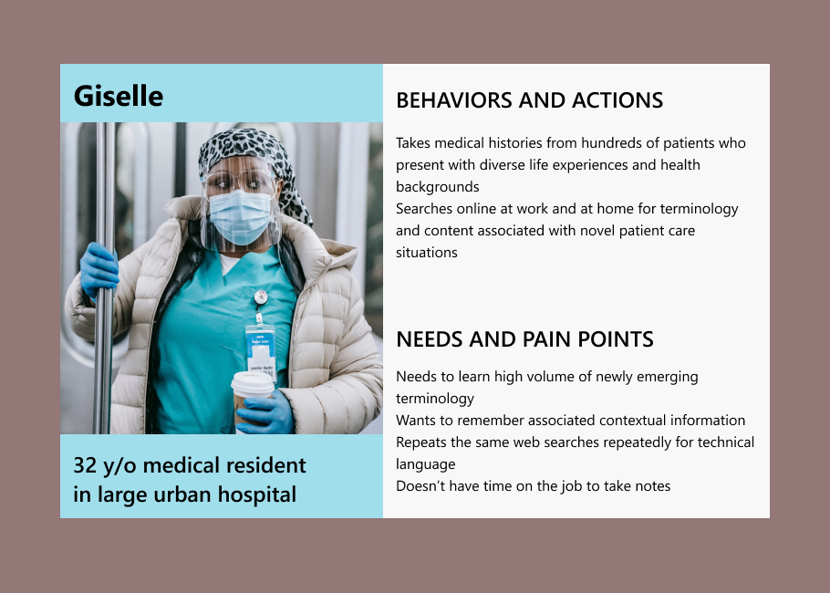

ROLES
UX Research, Ideation, Wireframing, Prototyping, Usability TestingTOOLS
Butcher paper and markers, Pop by Marvel, Excel, Diagrams.net, Adobe XDDURATION
One monthPROJECT TYPE
Student projectOverview
My first UX project, the assignment was to design and test the prototype for a vocabulary learning app for mobile devices. The prototype was low-fidelity by design, to avoid getting hung up in unfamiliar design software.
Problem
Career professionals in technical fields are continuously learning jargon and technical language, especially in healthcare settings. Web searches are easily forgotten and don’t leave a trace. Context, however, is everything.
Challenge
How can we design a learning app based on associating terminology with user notes and contextual indicators?
Solution
Lexical is a mobile app that allows healthcare professionals to build a customized reference of relevant terminology that incorporates:
- user-entered definitions;
- images;
- contextually appropriate tags, e.g., location, name(s), date/time
Research
Competitive analysis of vocabulary learning apps suggesting integration of the following key features:
- intuitive and familiar interface with minimal onboarding
- fully and immediately functional to first-time users

In user interviews and surveys, health science professionals described the challenge of learning terminology at work. Most indicated the lack of any system for doing so.
A proto-persona was developed based on user research.
Design
This was my first UX moment feeling like I was in a groove:
The concept of information architecture just clicked. I could visualize the user flows and "happy path" before putting anything on paper.

The wireframes practically drew themselves, so clear was my conception of this app and its fundamental premise - a constructivist approach to learning. Digitally, that looks like:
- new user opens app to a clean but empty UI
- user adds content: terminology, notes, images
- user builds associations between terms and notes using tags (e.g., people, place, date)

I built a low-fidelity prototype incorporating the hand drawn wireframes using Marvel. I was surprised how easy this was. In fact, I quickly saw that the app was insufficiently realized to simulate the user freedom and complex interactions that are fundamental to the app. So I drew additional frames and added them to the prototype.
Evaluation